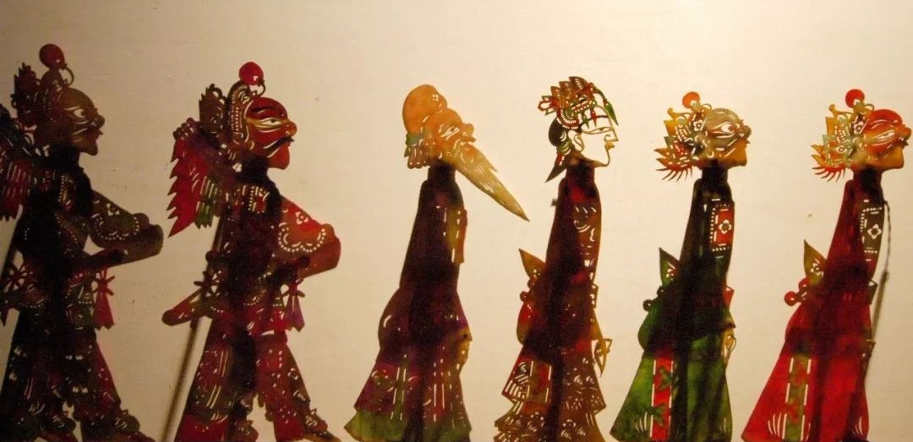
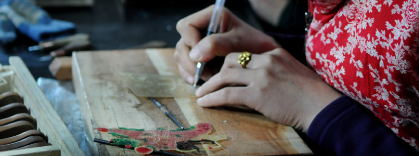
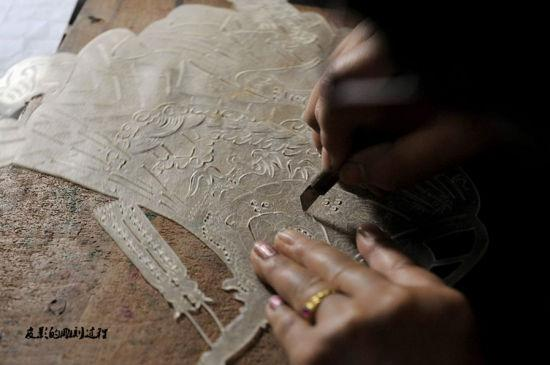
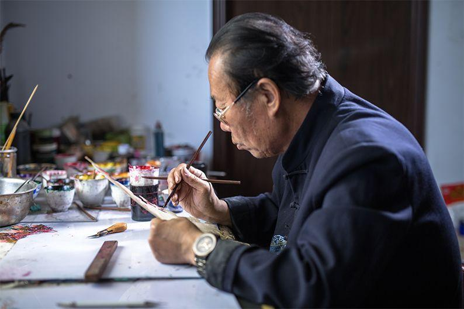
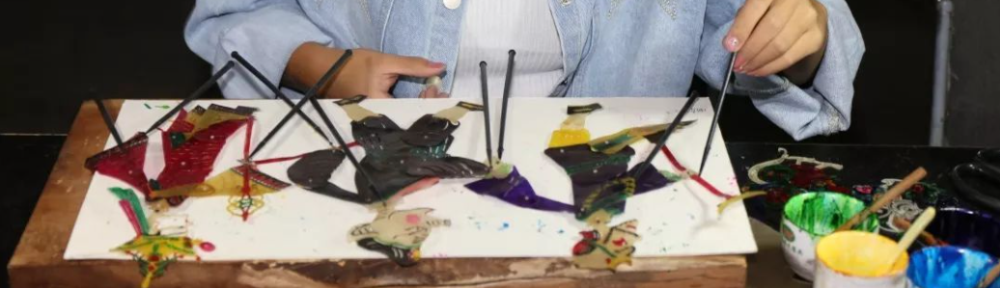
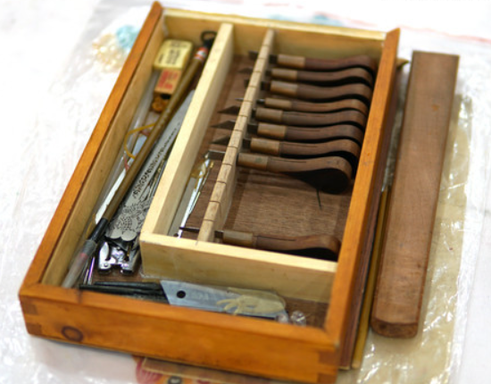
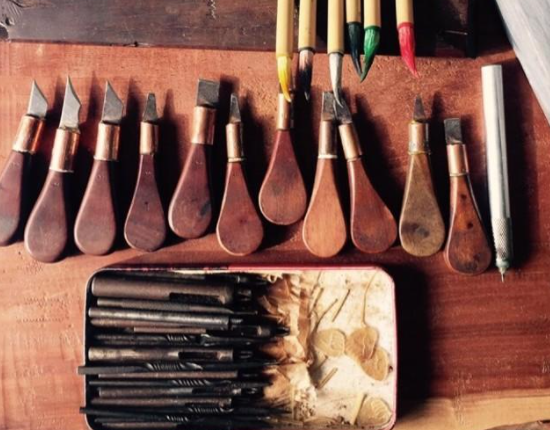
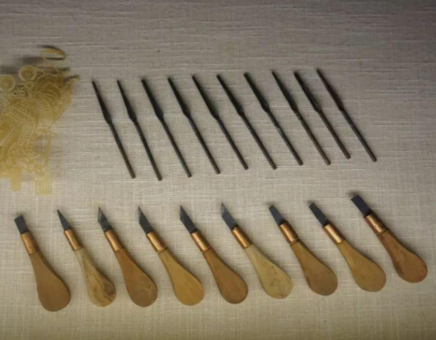

------------
------------首先,传统工艺制作，经过层层选料，将普通的牛皮进行反复的刮皮和浸泡，制作出光滑透明， 富有弹性的皮子。牛皮厚薄均匀，色泽一致，韧性 适中，制作出的影件平展透明，易于雕刻绘制。而 现代工艺则多采用机器加工制皮，与传统人工制皮有一定的差别，根据所制作对象的不同,选取的皮料也会有讲究。从人物造型角度来看，影人脸部成正侧面的五分像，而头饰则是采用半侧面七分表现，腰身以上为六分前侧，从腰部位置往下，腿部则是七分或者是八分侧视,甚至接近正面。腿脚则采用前后两个全侧面的形式表现，营造出一种空间立体感，加强了影人形象的生动趣味性。
影人头部造型分为脸谱和头饰两部分，对于脸谱眉眼的表现，人们通常概括为：“眼眉平，属忠 诚;圆眼睁，性子凶;线线眼，性情柔;豹子眼，性情暴。”武将和文人形象对比鲜明，而旦角多为大额 头，弧形弯眉，卧鱼状的细眼，唇角见棱，耳较长。花脸，脸谱形象造型夸张，纹饰精巧、色彩华丽，富有装饰性和观赏性(图二)。影人形象根据身份不同，设计风格各具特色，也是皮影雕刻艺术的精华。
------------皮影的制作步骤大致可分为：
起稿初样：
起稿也叫像图，根据设计图稿将影人各部件分片绘出，进行雕刻。分出的图稿大小适中，易保存雕刻。图稿来自于历代艺人相传的设计图，题材广泛，有民间故事，神话传说等，亦有反映时事的人物形象等。描样，将牛皮磨制平展，干净，用较细的钢笔或中性水笔将画稿拷贝至牛皮之上,随后即可醒皮雕镂。
雕刻 着色：
雕刻通常分为“推皮”和“推刀” 两种方法，前者是“皮动刀不动”，后者是“刀动皮不动”，实际制作中，也可根据雕刻者习惯，灵活把握。着色,将雕好的皮影部件打磨平整，然后按比例调人熬制好的胶，再将颜料浓度调和适中，开始双面渲染。为保持皮影部件的光泽度，绘制完成，应按步骤脱水压平，散热之后，方可组装其中，孝义皮影传统设色以红、绿、黄-色为主，并以 黑色加以柔化。制作皮影所使用的颜料大多是艺人们自制的颜色，色彩鲜艳明快、清雅大方，而且不易褪色，鲜艳富丽却不失典雅。现如今，许多皮影艺人也尝试使用市面上一些新型颜料，以求在传统工艺的基础上摸索出可使用的创新型材料。
  组装完成；
组装完成；
一个完整皮影人物一般由头、上身、下身、两腿、两上臂、两下臂和两手11件连缀组成。影人钉缝是造型逼真的重要环节,所以各个环节部分，要刻画出轮盘式的枢纽，叫做 “骨缝”，选好骨眼后将各部位连缀结合，形成一个完整的影人。找准骨眼，用锥子扎眼，粗线缝制，两头打结，使其能转动。
若要皮影演出,装配三根竹竿，通常在影人的两手、肩部打眼，要把握影人的重心，竹竿装细铁丝，使影人自由转动。骨眼准，使皮影摆动自如，脖子则要另加一层皮缝上，插换头的卡口。
------------雕刻刀：
大小不一，分为斜刀、直刀，美工 刀片、锯条改装后也可使用。刻刀的木把多用紫檀木制成圆锥形.夹刀片处用铁皮固定即可；依据传统经验，雕刻用刀也有讲究，如若刻线状的纹样，需要平刀去扎；若是曲折多变的花纹图样，用斜角刀刻制，遇到图形的花环则用凿刀去凿。
冲子：
传统手法用自制的冲子，现多用大小不同的皮带冲，或者木刻刀、半圆刀也可用来雕刻。
  垫板：
根据雕刻需要，垫板多用枣木板，枣木板硬度适宜，不易坏冲刀吒娴熟的刀功，让雕刻者做到胸有成竹。
- 顶部